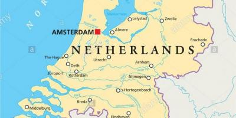

INTRODUCCIÓN

Ámsterdam o Amsterdam, según la pronunciación etimológica (Acerca de este sonido Amsterdam, es la capital oficial de los Países Bajos. La ciudad está situada entre la bahía del IJ, al norte, y a las orillas del río Amstel, al sureste. Fundada en el siglo XII como un pequeño pueblo pesquero, en la actualidad es la ciudad más grande del país y un gran centro financiero y cultural de proyección internacional.
Tiene una población de unos 810 000 habitantes y en su área metropolitana residen aproximadamente 1,5 millones. Cabe destacar que Ámsterdam forma parte de la gran conurbación neerlandesa llamada Randstad (junto con las ciudades de La Haya, Róterdam y Utrecht), que cuenta con más de 6,5 millones de habitantes. Este núcleo es una de las conurbaciones más grandes de Europa.
El centro histórico de la ciudad fue construido en gran parte en el siglo XVII y es hoy en día uno de los centros históricos más grandes de Europa. En aquella época se construyeron una serie de canales semicirculares alrededor del casco antiguo ya existente de la ciudad. Después se edificaron las nuevas calles que ahora habían sido creadas con casas y almacenes en un estilo típico neerlandés que es una de las imágenes más famosas de Ámsterdam y del país. Al igual que otras ciudades de Europa septentrional con abundancia de agua, como Brujas, Hamburgo y Estocolmo, es conocida coloquialmente como la «Venecia del norte».
Hoy Ámsterdam ha perdido la importancia comercial que tuvo en favor del puerto de Rotterdam y poder político en favor de La Haya, la actual capital económica de los Países Bajos.
Ámsterdam sigue siendo el centro intelectual de los Países Bajos; una ciudad industrial (talla de diamantes) y de servicios (Aeropuerto de Schiphol), de carácter multirracial con un gran porcentaje de inmigrantes y símbolo universal de tolerancia y libertad.
Amsterdam es la capital de los Países Bajos. Tiene una población cercana a los 750.000 habitantes de los que aproximadamente un tercio provienen de otros países.
Forma junto a La Haya y Rotterdam la conurbación de Randstad, una de las más grandes de Europa.
Amsterdam es una ciudad cosmopólita y a la vez tranquila, pero la palabra que mejor la define es "liberal". Sus costumbres y sus formas de ver la vida te dejarán impresionado.
Las posibilidades que ofrece al turista son innumerables: sus museos de fama internacional, como la Casa de Rembrandt o el Museo Van Gogh, la visitadísima Casa de Anne Frank, su impresionante vida nocturna, con su agitado distrito rojo, sus famosos Coffee Shops, sus canales, sus innumerables puentes, sus más de 70 teatros y 40 parques deportivos, su casco antiguo de cuento de hadas, con sus elegantes fachadas y delicadas cúpulas, su interesante Barrio Judío, sus talleres de diamantes, sus mercados callejeros...
Alquilar una bicicleta y recorrer sus avenidas y parques te harán sentir la verdadera esencia de esta mágica ciudad, que sin duda, no te dejará indiferente...
TABLA DEMOGRÁFICA
| Ciudad | Población | Indice de mortalidad |
|---|---|---|
| Utrecht | 343.779 hab. | 9,07‰ |
| Roterdam | 539 154 hab. | 7,69‰ |
| La Haya | 631.155 hab. | 8,77‰ |